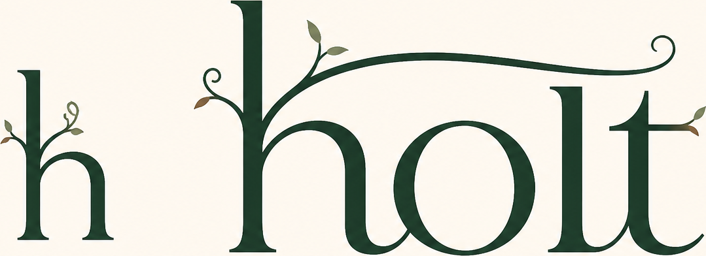

Keep agents moving.
Stop redoing or losing their work.
Holt gives every linked Git worktree one shared view of what is unique, duplicated, conflicting, dependent, or safe to recover. It turns a forest of agent worktrees into clear next actions for people, the CLI, the TUI, MCP clients, and supported host hooks.
One view shows the work already in flight; one safe loop preserves it before cleanup becomes a restart. Explore the feature guide or the detailed technical map.
Worktree lifecycle and merge automation stop short of local destructive authority.
Git can inspect each worktree, and current agent/worktree tools provide valuable creation, isolation, navigation and landing workflows. The missing decision is narrower: relate the complete in-flight state across native worktrees and decide, fail closed, whether removing one now would erase the last durable copy of anything.
Graphite, Mergify PR ordering, batching and CI after work is committed and shared holt protects local work before push or pull request
One sentence: holt is the local in-flight work integrity layer for platform teams already running parallel agents in native Git worktrees. It complements lifecycle managers and merge queues by protecting the state that exists before a pull request does.
Built for real work. Open to independent benchmarking.
Holt's exact gates and actions are exercised directly against disposable Git repositories. Install it, use it on real linked worktrees, and reproduce the open benchmark protocol on your own repository or agent host. The historical six-trial agent run remains a qualitative failure corpus, so its rates and lift are not used as website, release or sales proof.
What the evidence does establish
- Destructive authority is graded from state. Fixtures plant exact durable, dirty, untracked and ignored-path cases; a missing or failed instrument must produce an unverifiable verdict rather than a deletion licence.
- Actions verify their own preconditions. Rescue and discard capture to refs and verify the capture. Clean is dry-run by default and rechecks each candidate immediately before moving the whole registered worktree into locked local quarantine.
- Integrity capture is not secret storage. Rescue and discard write
untracked and ignored bytes to unencrypted local Git objects under
refs/holt/*. Holt does not push them or classify secrets; use quarantine or your approved encrypted secret store when.gitis outside the intended trust boundary. - Agent evaluation has a publication floor. A reportable comparison needs at least 20 valid trials per treatment, complete denominators and transcripts, independent filesystem/Git grading, and separate rows for hooks, MCP/instructions and Git locks.
Read the current publication contract in eval/README.md and the artifact requirements in Benchmarks. The feature proof matrix maps each shipped surface to executable evidence, an independent oracle and its remaining unproven boundary.
Dogfooded while building Holt
Holt was used on Holt's own repository while it was being developed. It made parallel worktrees easier to inspect, helped surface duplicate and at-risk work before cleanup, and informed the recovery-first workflow shipped here. That is a real development use case, not a substitute for independent testing—which is why the benchmark tools remain public.
One screen. The whole picture.
A dashboard in your terminal, and a map you can explore in your browser.
holt · my-project 2 at risk · 13 holding · 14 disposable ────────────────────────────────────── ● checkout-rewrite AT RISK ● billing-fix AT RISK ● api-refactor HOLDS ● search-index HOLDS ● old-experiment DISPOSABLE ● spike-2 DISPOSABLE ● tmp-review DISPOSABLE ────────────────────────────────────── P protect C clean q quit
The TUI is the fast decision view; the offline graph is the deeper relationship view. In a retained 10-worktree oracle, both surfaces identified the exact 2 at-risk, 5 holding and 3 disposable workstreams, including conditional redundancy and a proven conflict. Read the hands-on audit, screenshots and browser observations. Every relationship is tied to preservation, collision, duplication or ordering evidence—not generic activity telemetry.
Every feature answers a daily agent-workflow question.
Start simple with holt status. When the repository gets busy,
Holt expands from a shared work map into conflict prevention, recoverable cleanup, agent
context, review planning, and audit evidence—all from the same local Git facts.
See the whole project first
One answer to “what is happening across all worktrees?”: unique work, duplicate work, conflicts, uncertainty, and the next useful action.
Know what cleanup would cost
Checks committed, staged, dirty, untracked and ignored-path state together before a destructive decision—so a branch name never decides what is safe.
Catch collisions before the merge queue
Shows proven merge conflicts separately from early same-file and symbol overlap, so agents can coordinate while a fix is still cheap.
Stop rebuilding work that already exists
Surfaces symbol and body overlap across sibling worktrees. Exact durable twins are separated from review candidates, so useful similarity becomes a shortcut—not a guess.
Land work in the order it needs
Turns observed dependencies and conflicts into a review/landing sequence, with the reason behind every constrained edge.
Give agents a cleaner starting map
Creates disjoint advisory work buckets from real repository hotspots, reducing accidental overlap before a new wave of agent work begins.
Clear stale branches with evidence
Finds landed content even after squash merges by comparing trees, so old branches stop becoming a second graveyard of work nobody dares touch.
Test the combination before landing
Runs your own suite against A, B, and a speculative A+B merge—showing the breakage caused by their interaction, not a vague compatibility score.
Keep a trustworthy local trail
Records decisions and actions in a tamper-evident local journal, so a busy multi-agent session is explainable after the fact.
See it in seconds, not terminal scrollback
A risk-sorted interactive dashboard over the same evidence as the CLI. It makes the next inspection or recovery action obvious.
Give agents useful repository context
16 MCP tools put the decision surface and recoverable actions where capable agents can use them: twelve read-only tools plus four clearly scoped acting tools.
Recover instead of starting over
Protect unique work, capture it to verified refs, then move genuinely disposable worktrees to locked local quarantine after a fresh check. Restore is an exact command, not archaeology.
Give humans and agents the same map
Shows contested files, duplicate symbols, dependency hints and a review plan, so coordination happens from repository evidence instead of recollection.
Find the work Git hides in plain sight
Reconstructs recorded actions and inspects stashes whose work is reachable from no ordinary ref—useful when “where did it go?” matters most.
Install with visibility
Sets up supported local integrations, shows the capability available on this machine, and audits installed bytes and declared runtime behavior.
Built on proven OSS—and grateful for it.
Holt stands on the work of the open-source projects below. They make deep Git-aware analysis
practical without asking users to trust a black box. holt doctor
shows which optional capabilities are available on your machine.
Symbol extraction with measured parser probes, content-aware ambiguous-extension routing and compatibility definitions loaded only for gaps demonstrated on the installed build.
Content-based language detection — .fs resolves to F# or Forth by what's actually in the file.
Token-level clone detection powering the deep duplicate scan.
The correct committed-delta instrument — git diff base...head over-reports, and holt's suite proves the difference.
A first-class backend — workspaces resolved from the workspace store, op-log proven untouched by scans.
The layer git doesn't have.
Git compares commits and bytes. holt snapshots each worktree's uncommitted state into a real
commit so git's own merge-tree can prove a conflict, then relates
the results by symbol — which byte comparison structurally cannot do.
Committed layer
Exact path, operation, mode, object type and object ID evidence, including deletion tombstones and durable copies.
Uncommitted layer
Staged, working-tree and untracked content, plus ignored paths that prevent a disposable verdict when their bytes cannot be proven reproducible.
Symbol layer
A ctags-derived define/reference graph for advisory overlap, impact, order and partitioning. It helps route review; it never licenses deletion.
Verdict
disposable · holds-work · unverifiable, alongside separate conflict and coordination evidence. Destructive actions recompute the relevant verdict.
Lock
A local Git worktree lock, reason keyed to content: holt: holds work found nowhere else. It covers git worktree remove --force; configured host hooks cover additional supported shell commands.
One command wires the supported project surfaces.
Advice, MCP access and pre-execution blocking are different strengths. Holt reports them separately for each known host instead of turning a generated config file into a live enforcement claim.
AGENTS.md
Bounded operating guidance for hosts that read it. Advisory context helps an agent choose the safe action; it is not an enforcement boundary.
MCP
16 decision-oriented tools: twelve read-only and four acting. MCP is reactive/model-pull:
registering the server does not make a host call it proactively. The protocol and generated
config shapes are exercised; no config-shape test is presented as a real-host enforcement
run. holt_clean retains the worktree and branch;
holt_purge separately re-verifies, anchors the exact HEAD,
retains the branch and uses non-forced Git removal.
Hooks
Project-scoped shell guards for Claude Code, OpenCode, Cursor, Codex, Qwen Code, Copilot CLI, Cline, Goose, Devin CLI and Cascade, plus a git pre-commit warning as the floor. Claude, Codex, Qwen and Antigravity also have lifecycle-context adapters with separately stated scope. Each adapter's fail-open, timeout and trust limits stay explicit.
See the generated matrix and its real-host caveat in HOSTS.md.
Benchmark Holt on the work that matters to you.
The public evidence contract makes independent evaluation reproducible: name the corpus, retain the denominator, repeat timing runs, record source stability, and publish a checksum. This page describes the harnesses; result tables belong in a linked artifact, not hand-maintained HTML.
1 · Correctness at scale
reproduce:node eval/bench.mjs 1000 --runs 5 --warmups 1 --out evidence.json
The equal bars are a schematic of the required scenarios, not measured values. A real artifact records each warmup and measured sample; synthetic timing is not extrapolated to a real repository, and a missing planted verdict invalidates the run.
- what
- Every verdict re-graded against planted ground truth as the requested fan-out grows—not just wall-clock time.
- how
eval/bench.mjsbuilds N worktrees in a fixed planted composition (30% committed-ahead, 20% uncommitted-only, 30% landed-decoy, 20% empty), scans, then re-grades every verdict. A scan that gets faster by skipping work fails the run — it doesn't just time out.- means
- A valid artifact reports both timing and whether the scanner skipped or misclassified any planted state.
2 · The monster round (worst case)
reproduce:node eval/monster.mjs 120
| graded surface | valid-run requirement |
|---|---|
| symbol extraction | every planted symbol is accounted for, including named unmeasured files |
| destructive verdicts | every planted worktree is found before its verdict is graded |
| action loop | valuable bytes are checked after protect → clean → rescue |
A bounded adversarial round is pinned in CI at test/e2e/monster.test.mjs;
the next artifact adds source identity, full denominators and a checksum.
- what
- One repository containing multiple hazards at once: junk heaps, buried gold, lying names, Unicode paths, nested Git repositories, foreign locks and valuable work in multiple languages—graded on detection, verdicts and byte survival through
protect → clean --apply → rescue, including the retained quarantine. - how
- One synthesised worst-case repo, scanned and then run through the full recoverable action loop.
- means
- The harness is designed to expose composition bugs that isolated fixtures miss. The next publication step is a source-identified, denominator-complete, checksummed artifact so others can reproduce its result exactly.
3 · Invariant fuzzing
reproduce:node --test test/e2e/fuzz-invariant.test.mjs
- what
- holt checked against an independent oracle that shares no code with it — raw
git statusplus direct content comparison against base. - how
- Seeded worktree-state compositions; the oracle checks risky-content verdicts, retained quarantine state and valuable-byte survival after
clean --apply. - means
- This is the check that catches a subtle logic bug the hand-written scenario tests didn't think to ask for.
4 · Clean-room degradation
CI job:bare
- what
- The dedicated Ubuntu job omits npm optional dependencies, asserts ctags and enry are absent, runs the safety unit suite, then exercises
doctorand degradedstatus. - how
ubuntu-latestwith Node 22.23.2 andnpm ci --omit=optional. Broader CLI, detection and invariant-fuzzer coverage belongs to separate matrix jobs, not this one.- means
- The named safety test and first-run commands exercise the labelled regex-fallback path. This job is not presented as the full suite in a minimal container.
5 · Agent evaluation
protocol:eval/README.md
| required field | publication rule |
|---|---|
| denominator | at least 20 valid trials per treatment; invalid trials named separately |
| treatment | blocking hook, MCP/instructions and Git protection remain separate rows |
| grade | independent filesystem and Git state, never agent self-report |
| utility | reported beside safety so refusal-only behaviour cannot look successful |
Independent testing stays visible as a record of real failure modes. The retained six-trial pilot is useful for reproducing them; broader adversarial and real-repository evaluation is open and planned.
- what
- Whether a named agent/host/version preserves irreplaceable work while still removing genuinely disposable work.
- how
- Identical prompts, decontaminated controls, complete transcripts and independent grading against planted state.
- means
- Current comparative safety or utility results are published with the complete artifact that supports them.
6 · Test-suite integrity
- what
- Whether the safety net has holes the ordinary test suite wouldn't find.
test/mutation.mjsbreaks high-stakes behaviours on purpose —safeToDeletereturning true for everything, the git allowlist permitting everything, rescue skipping verification — and requires the suite to go red. - how
- Mutations run in a disposable repo copy, never the live tree; a tripwire fingerprints the live repo after every mutation and exits 2 on any drift — proven able to fire by deliberate sabotage.
- means
- The first mutation run scored 10/12; both survivors exposed real holes. The current headline is eligible only after the complete mutation set finishes with no survivor.
A stronger shared work layer, shaped by real use.
Holt’s free core is ready to use now. The next investments build on the same local evidence model: better recovery across machines, deeper live-host coverage, and shared controls for teams. Priorities will follow real workflow demand and user feedback, so this is a direction, not a promise of dates or a hidden paid feature list.
Portable recovery capsules
Package a workstream manifest, Git bundle, recovery reference and verification data so valuable work can survive the original directory or machine.
Verified external checkpoints
Add optional encrypted checkpoint providers and restore testing for teams that need recovery beyond local Git and quarantine.
More live host conformance
Turn contract coverage into repeatable live-host allow, deny and failure evidence—then expand integrations where users actually run agents.
Shared team workspace
Build a focused team view for shared policy, workstream identity, recovery status, audit context and role-aware operations without turning Holt into a generic project manager.
Enterprise identity and governance
Plan future design-partner requirements for centrally managed policy, planned SSO, planned SCIM, entitlement lifecycle and support operations before presenting an enterprise offer.
Open adversarial evaluation
Expand real-repository, worst-case recovery and with/without-agent studies. Users can run the public harnesses now and help decide which failures matter next.
Want to influence the roadmap? Open a reproducible workflow issue or benchmark result on GitHub. The best next feature is the one that removes a real agent-workflow failure.
The no-cost tier is the complete single-repository product.
Analysis, exact gates, safe actions, project-scoped integrations, the TUI, inline CI, the local journal and single-repository forensics are available under FSL-1.1-MIT for its defined Permitted Purposes, including internal commercial use that is not a Competing Use. Team and Enterprise are deliberately not offered in this launch. Their capabilities inform Holt’s future shared-work roadmap. Their separately licensed implementation remains visible for audit while design-partner workflows shape the right packaging, support and governance model.
The complete single-repository product. No account, telemetry or feature expiry.
- Exact destructive authority plus advisory collisions, duplicates, impact, order and partitioning
- Protect → verified rescue/discard → fresh-check clean
- 16-tool MCP server and graded project-scoped host integrations
- Inline CI, TUI, hash-chained journal, export and single-repository forensics
- Optional ctags/enry/jscpd/jj backends degrade explicitly when absent
Start with the free core on a real repository. Teams that need shared recovery, policy and governance can help shape the next focused layer through their real workflows.
Inspect, protect, preserve, then clean.
Start with the decision surface; add integrations after you see the host-specific coverage.
No-cost for the licence's Permitted Purposes.
- The complete single-repository product is available under FSL-1.1-MIT: any purpose other than a defined Competing Use.
- Internal commercial use is permitted; offering Holt or substantially similar functionality as a substitute remains restricted until that release converts to MIT.
- Each FSL-covered release converts to MIT on its own second anniversary.
- The Team and Enterprise implementations under
src/team/use a separate commercial licence, require the corresponding paid entitlement for work use and do not carry the future-MIT grant.